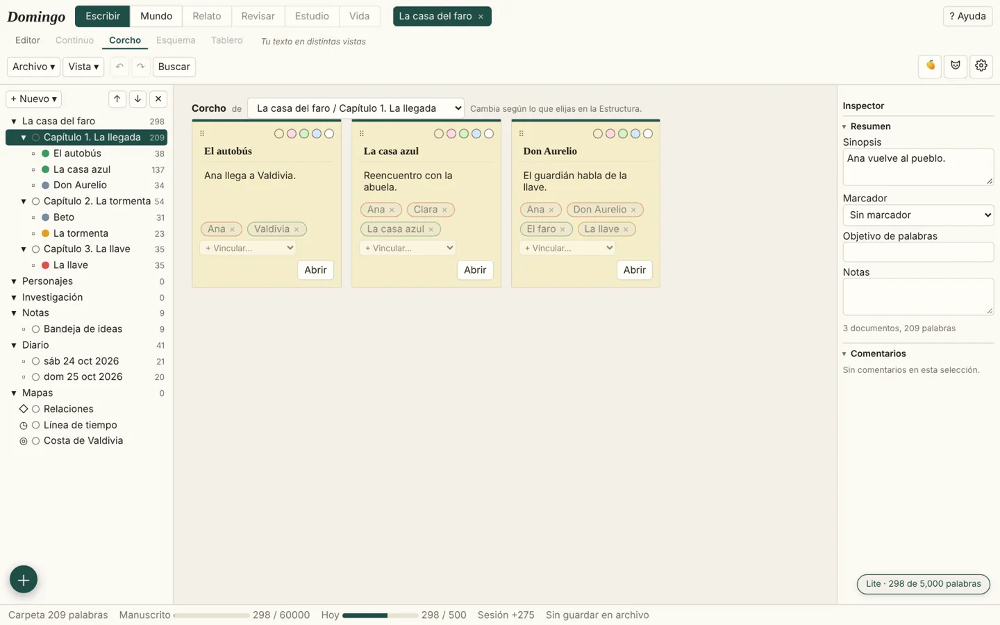
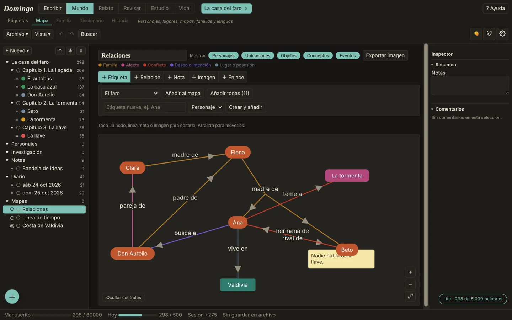

Domingo LiteGratis, siempre
Domingo, gratis en tu navegador
Sin instalar nada, sin cuenta y sin fecha de vencimiento. Lo esencial de Domingo para escribir hoy mismo, y tu archivo listo para la app completa cuando la quieras.
Funciona mejor en computadora, con Chrome, Edge, Safari o Firefox.

Lo que trae
Escribe, ordena y dibuja tu historia
Las mismas herramientas de la app, con un tope amable.


Misi y los mangos
El gato de píxeles te acompaña, y el Mango te da una idea cuando no sabes por dónde empezar.
Tres estilos
Cada uno en claro, sepia y oscuro, para escribir de día o de noche.
Tu archivo .mingo
Guárdalo con Archivo › Guardar. La app completa lo abre tal cual, sin perder nada.
Nuevo: Lite te recibe con un poema como primer ejercicio, trae el Taller de poema y la vista Poesía para contar sílabas, medir versos y encontrar la rima.
Lite o la app completa
Qué cambia cuando creces
| Lite | App completa | |
|---|---|---|
| Precio | Gratis | $499 MXN, pago único |
| Dónde funciona | Navegador | macOS y Windows, sin conexión |
| Palabras | Hasta 5,000 | Sin tope |
| Manuscritos | Uno a la vez | Todos los que quieras |
| Editor, corcho y relaciones | Sí | Sí |
| Mapas | Hasta 6 elementos | Sin tope |
| Línea de tiempo, mapa geográfico y árbol familiar | No | Sí |
| Revisión, estudio, diario y vida | No | Sí |
| Talleres de escritura | Taller de poema | Todos |
| Estilos | 3 | 10 |
| Exportar a Word, PDF o ePub | No | Sí |
Cómo empezar
Tres pasos, ningún registro
- Abre Domingo Lite. La app carga en tu navegador en unos segundos.
- Escribe. Tu trabajo se guarda solo en este navegador mientras escribes.
- Guarda tu .mingo de vez en cuando, para tenerlo a salvo y llevarlo a la app completa.